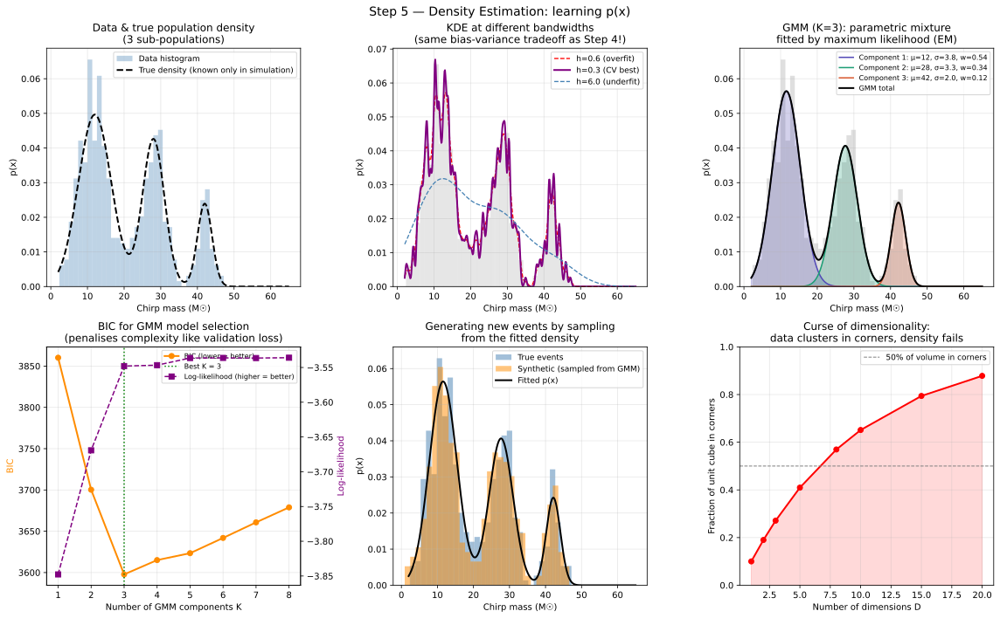

Machine Learning from Scratch: a Physicist's Road to Generative Models V
Section 5: Density Estimation: Learning the Shape of the Data
A different kind of question
Every step so far has been a version of the same basic task: given an input \(\mathbf{x}\), predict an output \(y\). In section 1 that output was a continuous number (luminosity). In section 2 it was a probability of class membership (signal or noise). In sections 3 and 4 we made the model more expressive and more robust, but the fundamental question, "given \(\mathbf{x}\), what is \(y\)?" never changed.
This section asks something completely different: what is the probability distribution of \(\mathbf{x}\) itself?
Not "given this event, is it signal?" but "how likely is it to observe an event like this at all?" Not a label. Not a regression target. The full shape of the data, where events are common, where they are rare, where they simply do not occur. This is called density estimation, and it is the bridge that leads, step by step, to normalising flows.
Why physicists need density estimation
Before the mathematics, it is worth being concrete about why this matters in your field. There are four distinct use cases that appear repeatedly in astrophysics, GW astronomy, and particle physics.
Anomaly detection without labels
If you have a model for the probability distribution \(p(\mathbf{x})\) of your known background, then any new event with very small \(p(\mathbf{x}_{\text{new}})\) is — by definition — unlike anything you have seen before. In GW astronomy this could be a merger that falls outside the known binary black-hole (BBH) mass distribution. In collider physics it could be an event with kinematics incompatible with any Standard Model process. No signal model is required; you only need a good model of the background.
Population inference
LIGO's population papers (e.g. P. Kumar et al. 2024), the analyses that characterise the mass spectrum, spin distribution, and redshift evolution of compact binary mergers across all detected events, are fundamentally density estimation problems. The goal is to fit \(p(m_1, m_2, \chi_{\text{eff}}, z)\), the joint distribution over chirp masses, spins, and redshift, to the entire catalogue of observed posteriors. This is hierarchical Bayesian inference, and its foundation is a flexible model for \(p(\mathbf{x})\).
Fast simulation
Once you have learned \(p(\mathbf{x})\) from a set of expensive Monte Carlo events, you can sample new synthetic events from it instantly, without running the full simulator again. This is the basis of surrogate models for detector response and fast MC generation.
Posterior estimation
Bayes' theorem tells us that the posterior \(p(\theta \mid d) \propto p(d \mid \theta) \cdot p(\theta)\). If we can model the posterior directly as a learned density, which is exactly what normalising flows do in DINGO and FlowMC, we get samples from the posterior in milliseconds rather than the hours required by traditional Markov Chain Monte Carlo (MCMC).
The new loss function: negative log-likelihood
In sections 1–4, the loss function was either MSE or cross-entropy. Both had a physical interpretation: MSE penalises the distance between prediction and truth; cross-entropy penalises the log-probability of the wrong class. For density estimation, the natural loss function is the negative log-likelihood (NLL):
\[L(\theta) = -\frac{1}{N} \sum_{i=1}^{N} \log p(x_i; \theta)\]
Let us build this formula from scratch, one step at a time, so every symbol is earned rather than assumed.
Step 1: What does it mean for a model to "fit" a density?
Suppose we observe a single data point \(x_1 = 14.2\) \(\text{M}_{\odot}\). We have a model density \(p(x; \theta)\) with parameters \(\theta\). The model assigns a probability density value to every possible \(x\). A "good" model should assign a high density value to \(x_1 = 14.2\) \(\text{M}_{\odot}\), meaning: this model considers such an event to be common or more likely to occur.
So for one data point, we want to maximise \(p(x_1; \theta)\).
Step 2: Extend to many data points
We observe \(N\) data points \(x_1, x_2, \dots, x_N\). Assuming the events are independent (a reasonable first approximation), the probability of observing this entire dataset under the model is the product of individual probabilities:
\[\mathcal{L}(\theta) = p(x_1; \theta) \cdot p(x_2; \theta) \cdots p(x_N; \theta) = \prod_{i=1}^{N} p(x_i; \theta)\]
This is called the likelihood, the probability of seeing the observed data, given the model parameters \(\theta\). We want to find the \(\theta\) that makes this as large as possible. This is Maximum Likelihood Estimation (MLE).
Step 3: Take the log
Maximising a product is numerically unstable. If you multiply 1,000 probabilities together (each between 0 and 1), the result will be a number so tiny that a computer will round it to zero (arithmetic underflow). To fix this, we take the natural logarithm of the likelihood1. Since \(\log(a \cdot b) = \log a + \log b\), the product of probabilities becomes a sum of log-probabilities:
\[\log \mathcal{L}(\theta) = \sum_{i=1}^{N} \log p(x_i; \theta)\]
Because \(\log\) is a monotonically increasing function, the \(\theta\) that maximises the log-likelihood is exactly the same \(\theta\) that maximises the original likelihood.
Step 4: Flip the sign and average
By convention, optimisers in machine learning (like gradient descent) are designed to minimise functions rather than maximise them. To turn a maximisation problem into a minimisation problem, we simply multiply by \(-1\). We also divide by \(N\) so that the value of our loss function does not depend on the size of the dataset. This gives us the Negative Log-Likelihood (NLL):
\[L(\theta) = -\frac{1}{N} \sum_{i=1}^{N} \log p(x_i; \theta)\]
This is the standard loss function for density estimation. If the model assigns high probability to the observed data, \(\log p\) is close to zero, and the loss is small. If the model assigns low probability to the data, \(\log p\) is a large negative number, and the loss is large.
Every generative model we will discuss, from simple Gaussians to complex Normalising Flows, is trained by minimising this exact expression.
The connection to previous articles I-IV
This is not a new principle. It is the same one, applied more broadly.
In Step 1 (regression), minimising MSE is equivalent to maximising the log-likelihood of the data under a Gaussian noise model: \(p(y_i \mid x_i, \theta) = \mathcal{N}(y_i; f(x_i; \theta), \sigma^2)\).
In Step 2 (classification), minimising cross-entropy is equivalent to maximising the log-likelihood under a Bernoulli model: \(p(y_i \mid x_i, \theta) = p_i^{y_i}(1 - p_i)^{1-y_i}\).
Here, we are now maximising the log-likelihood of \(p(x; \theta)\) directly, without conditioning on an output label. The loss function, the optimiser, and the principle are unchanged. Only the model changes.
Three classical density models
We need \(p(x; \theta)\) to satisfy two hard constraints: it must be non-negative everywhere (\(p(x) \geq 0\)), and it must integrate to one (\(\int p(x) \, dx = 1\)). Three classical methods satisfy these constraints, each with a different philosophy.
Method 1: The histogram
The simplest density estimator is the histogram: divide the range of \(x\) into \(B\) bins of width \(\Delta\), count the events in each bin, and define the density in each bin as:
\[p(x) = \frac{\text{count in bin}}{N \cdot \Delta}\]
The division by \(N \cdot \Delta\) ensures the histogram integrates to one. This is the familiar "normalised histogram" you have plotted thousands of times.
The histogram is simple, but it has two fundamental problems. First, it assigns \(p(x) = 0\) in any empty bin so a single new event in an empty bin gets infinite surprise (\(-\log 0 = \infty\)), which is clearly wrong. Second, the number of bins grows exponentially with the number of dimensions: with 10 bins per axis and \(D = 10\) features, you need \(10^{10} = 10\) billion bins. You will never have enough data to fill them. This exponential scaling is called the curse of dimensionality.
Method 2: Kernel Density Estimation (KDE)
KDE is a more sophisticated non-parametric approach. Instead of counting events in fixed bins, it places a smooth kernel function (often a Gaussian) centred on every data point, and sums them all up:
\[p(x) = \frac{1}{N} \sum_{i=1}^{N} K_h(x - x_i), \quad x \in \mathbb{R}\]
where \(K_h\) is a Gaussian kernel with bandwidth \(h\):
\[K_h(u) = \frac{1}{h\sqrt{2\pi}} \exp\left(-\frac{u^2}{2h^2}\right)\]
The bandwidth \(h\) is the key hyperparameter. Each data point contributes a small Gaussian "bump" of width \(h\) to the estimated density. If \(h\) is very small, the estimate becomes jagged and overfits individual points. If \(h\) is very large, the estimate is overly smooth and loses structure. This is the familiar bias–variance tradeoff discussed in section 4.
The optimal bandwidth is chosen by cross-validation: hold out a fraction of the data, evaluate the log-likelihood of the held-out points under the estimated density for several values of \(h\), and pick the \(h\) with the highest log-likelihood. This is gradient descent's cousin applied to a discrete hyperparameter search.
*Figure 1: Three density estimators applied to 500 synthetic BBH chirp-mass events drawn from three sub-populations. KDE mode: drag the bandwidth slider and watch the log-likelihood (top-left statistic) change; the optimal \(h\) sits between the spiky overfit curve and the over-smoothed blob, exactly as the bias-variance tradeoff predicts. GMM mode: the three dashed coloured curves are the individual Gaussian components; their sum (solid) is the full estimated density. Histogram mode: adjust the bin count to see how coarse or fine binning trades resolution for stability. All three estimators are modelling the same \(p(x)\); they differ only in how they represent it.*
KDE has one critical limitation: like the histogram, it suffers from the curse of dimensionality. With many data points and many dimensions, evaluating the density at a new point requires computing the kernel contribution from every single training point, an \(O(N)\) operation that becomes impractical for large \(N\) or large \(D\).
Method 3: Gaussian Mixture Models (GMM)
The GMM addresses the multi-modal structure of real data in a principled parametric way. The idea is to represent the density as a weighted sum of \(K\) Gaussian components:
\[ p(x) = \sum_{k=1}^{K} \pi_k \cdot \mathcal{N}(x; \mu_k, \sigma_k^2) \]
Every term in the sum is a properly normalised Gaussian. The weights \(\pi_k\) satisfy \(\pi_k \ge 0\) and \(\sum_k \pi_k = 1\). Therefore the whole sum is also a valid density, it is non-negative everywhere and integrates to one.
Let us understand the parameters one by one:
- \(\pi_k\) is the mixing weight of component \(k\). It tells us what fraction of the data comes from this component. If \(\pi_1 = 0.56\), then 56% of events are drawn from the first Gaussian.
- \(\mu_k\) is the mean (centre) of component \(k\). For a BBH chirp mass distribution, this is the central mass of that sub-population.
- \(\sigma_k^2\) is the variance (spread) of component \(k\). A narrow Gaussian (\(\sigma\) small) means the sub-population is tightly clustered; a broad one means it is spread over a wide mass range.
In multiple dimensions, the variance generalises to a covariance matrix \(\boldsymbol{\Sigma}_k\), allowing each component to be an ellipse in 2D or an ellipsoid in higher dimensions.
The hidden variable intuition
There is a beautiful generative story behind the GMM. Imagine that to produce each data point \(x_i\), nature first secretly flips a \(K\)-sided weighted coin to pick a component \(z_i \in \{1, 2, \dots, K\}\) with probabilities \(\pi_1, \dots, \pi_K\). Then it draws \(x_i\) from the Gaussian corresponding to that component: \(x_i \sim \mathcal{N}(\mu_{z_i}, \sigma_{z_i}^2)\).
We never observe \(z_i\) directly, it is a latent variable hidden from us. All we see is \(x_i\). The GMM marginalises over the unknown component assignment by summing over all possibilities:
\[ p(x_i) = \sum_{k=1}^{K} p(z_i = k) \cdot p(x_i \mid z_i = k) = \sum_{k=1}^{K} \pi_k \cdot \mathcal{N}(x_i; \mu_k, \sigma_k^2) \]
This hidden-variable view is important because it motivates the training algorithm, and it is the conceptual ancestor of the latent variables \(z\) we will use in autoencoders and variational autoencoders in the following sections.
Training the GMM: the EM algorithm
We cannot maximise the GMM log-likelihood with a simple gradient step because the labels \(z_i\) are unknown. The standard algorithm is Expectation-Maximisation (EM), which alternates between two steps until convergence.
E-step (compute soft assignments). For each data point \(x_i\) and each component \(k\), compute the responsibility \(r_{ik}\) — the probability that component \(k\) generated \(x_i\), given the current parameters:
\[ r_{ik} = \frac{\pi_k \cdot \mathcal{N}(x_i; \mu_k, \sigma_k^2)}{\sum_{j=1}^{K} \pi_j \cdot \mathcal{N}(x_i; \mu_j, \sigma_j^2)} \]
This is just Bayes' theorem: the numerator is "how well does component \(k\) explain \(x_i\), weighted by how common component \(k\) is?", and the denominator normalises so the responsibilities sum to one across components for each point. After this step, every point has a soft, fractional assignment to every component.
M-step (update parameters). Given the responsibilities computed in the E-step, update each component's parameters as weighted averages, where each data point contributes to component \(k\) proportionally to \(r_{ik}\):
\[ N_k = \sum_{i=1}^{N} r_{ik} \quad \text{(effective number of points in component \(k\))} \]
\[ \pi_k = \frac{N_k}{N} \quad \mu_k = \frac{1}{N_k} \sum_{i=1}^{N} r_{ik}x_i \quad \sigma_k^2 = \frac{1}{N_k} \sum_{i=1}^{N} r_{ik}(x_i - \mu_k)^2 \]
These updates have an intuitive reading: \(\mu_k\) is the responsibility-weighted mean of all data points, \(\sigma_k^2\) is the responsibility-weighted variance, and \(\pi_k\) is the fraction of total responsibility absorbed by component \(k\). Repeat E and M until the log-likelihood stops increasing. This algorithm is illustrated in the interactive figure below.
*Figure 2: The EM algorithm fitting a three-component GMM to 180 synthetic events. Press Next step to alternate between the E-step (each point is recoloured by its responsibility \(r_{ik}\) how strongly component \(k\) claims it) and the M-step (each Gaussian's mean \(\mu_k\) and spread \(\sigma_k\) are updated as responsibility-weighted averages of the data). The dashed ellipses show the 1\(\sigma\) contour of each component; the crosshair marks \(\mu_k\); \(\pi_k\) is the current mixing weight. The green bar at the bottom tracks the log-likelihood; it increases monotonically and plateaus at convergence. Use Run to convergence to watch the full optimisation in one go, then Reset to start again from a fresh initialisation.*
EM is not gradient descent, it does not compute \(\partial L / \partial \theta\) and step downhill. But it is guaranteed to increase the log-likelihood at every iteration, and it converges to a local maximum. The key practical detail is that you must choose \(K\), the number of components, before training. We use the Bayesian Information Criterion (BIC) to select \(K\): train GMMs with \(K = 1, 2, 3, \dots\) and choose the \(K\) that minimises BIC, which penalises the log-likelihood for the number of parameters (exactly as the validation loss penalises overfitting in section 4).
Worked example: the BBH chirp mass distribution
The accompanying article script generates a synthetic population of compact binary mergers with three chirp-mass sub-populations: stellar-origin BBHs centred at 12 \(\text{M}_{\odot}\), a more massive channel at 28 \(\text{M}_{\odot}\), and a rare high-mass population at 42 \(\text{M}_{\odot}\), broadly consistent with what LIGO has inferred from the GWTC catalogues. We then fit three density estimators to this data and compare. The figure below shows the results.

*Figure 3: Six panels for the BBH chirp mass dataset. Top-left: the data histogram and the true density (dashed), which is only knowable because we generated the data ourselves. Top-middle: KDE at three different bandwidths, the red curve (\(h = 0.6\)) overfits individual noise fluctuations; the blue (\(h = 6.0\)) smooths all three peaks into one blob; the purple (CV-selected optimal) recovers all three modes. Top-right: the GMM decomposed into its three coloured Gaussian components; BIC selects \(K = 3\) as the best model. Bottom-left: BIC as a function of \(K\), the minimum at \(K = 3\) is the model-selection answer. Bottom-middle: 500 synthetic events sampled from the fitted GMM overlaid on the true data; the sampled distribution matches closely. Bottom-right: the curse of dimensionality; the fraction of a unit hypercube that lies in its corners grows toward 1 as dimension increases, showing why KDE and histograms fail at high \(D\).*
The curse of dimensionality: why classical methods fail
For 1D data, all three methods work well. For 2D or 3D data, KDE and GMM still perform reasonably. But as the number of features \(D\) grows, both methods deteriorate rapidly, for the same fundamental reason: in high dimensions, data becomes sparse.
Here is a concrete way to see this. Consider a \(D\)-dimensional unit hypercube \([0, 1]^D\). Place a data point at the centre. The fraction of the cube's volume that lies within distance \(r\) of the centre is roughly proportional to \(r^D\). For \(r = 0.5\) and \(D = 10\), this fraction is \(0.5^{10} \approx 0.001\); only 0.1% of the volume is "nearby." Almost all of the volume is in the corners, far from any data point. KDE cannot estimate the density well in regions with no data points nearby, and with \(D = 10\) there are essentially no regions that are not far from something.
For KDE: the number of data points needed to maintain the same estimation quality scales roughly as \(N \propto h^{-D}\), which grows exponentially. For histograms: with \(B\) bins per axis, the total number of bins is \(B^D\); for \(B = 10\) and \(D = 15\) (the number of parameters in a GW posterior), this is \(10^{15}\) bins. No dataset will ever fill them.
This is the wall that motivates everything in the following sections. We need a density model that does not require covering \(D\)-dimensional space with kernels or bins; one that can learn the density of high-dimensional data efficiently. That model is the normalising flow.
What the code does
The hands-on material for this section is in a dedicated Jupyter notebook in the accompanying GitHub repository ↗. Each section of this series has its own notebook, so you can work through them independently and at your own pace without wading through unrelated code 😇.
The accompanying tutorial notebook ↗ is divided into six parts. Part A confirms the KDE formula numerically, it checks the closed-form bandwidth comparison against a naive computation. Part B generates the three-population BBH chirp mass dataset. Part C finds the optimal KDE bandwidth using five-fold cross-validation, printing the log-likelihood at each candidate \(h\); you should see a clear maximum at the optimal bandwidth. Part D fits GMMs for \(K = 1\) through \(8\) and prints the BIC table; the minimum BIC entry is where the model selection lands. Part E generates synthetic samples from the best GMM. Part F produces the full six-panel figure shown above.
The most instructive thing to do with the script is to change the number of generated events from 500 to 50 and rerun. With only 50 points, the optimal KDE bandwidth changes dramatically, the GMM starts over-splitting the populations, and the BIC may select the wrong \(K\). This shows the dependence of all classical density estimators on the amount of data, and motivates the need for structured parametric models, like flows, that can extract more information from fewer events.
The running scorecard
| Regression | Classification | Neural net | Regularisation | Density estimation | |
|---|---|---|---|---|---|
| Output | \(\hat{y} \in \mathbb{R}\) | \(p \in [0, 1]\) | \(p \in [0, 1]\) | same | \(p(x) \ge 0\) |
| Loss | MSE | Cross-entropy | Cross-entropy | \(\text{CE} + \alpha\|\theta\|^2\) | \(-\log p(x)\) |
| Labels needed? | Yes | Yes | Yes | Yes | No |
| What it learns | \(p(y \mid x)\) | \(p(y \mid x)\) | \(p(y \mid x)\) | \(p(y \mid x)\) | \(p(x)\) |
The last column is the conceptual break. For the first time in this series, no labels are required. The model learns from the data distribution itself, which means it can be applied to unlabelled event streams, and it can generate new synthetic events by sampling.
What comes next
We now know what we want: a model of \(p(x)\) that can handle high-dimensional data, can be trained by maximum likelihood, can generate new samples, and does not suffer from the curse of dimensionality.
The next section introduces the autoencoder, a neural network that compresses data into a low-dimensional latent representation \(z\) and then reconstructs it. The autoencoder is not yet a density model, but it gives us the idea of a bottleneck latent space that we will need for everything that follows. Section 7 turns that into the variational autoencoder, the first proper generative model in this series. And section 8 arrives at normalising flows, the model that delivers everything on the wish list above, exactly and without approximation.
1 This product form assumes the training examples are i.i.d. (independent and identically distributed), which is the standard assumption in machine learning, including most tabular neural network setups. ↩